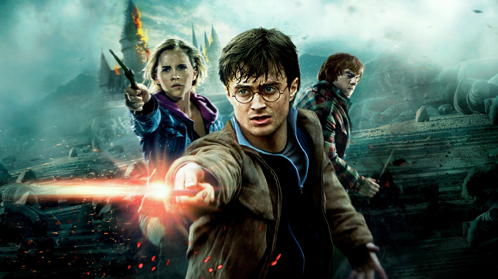
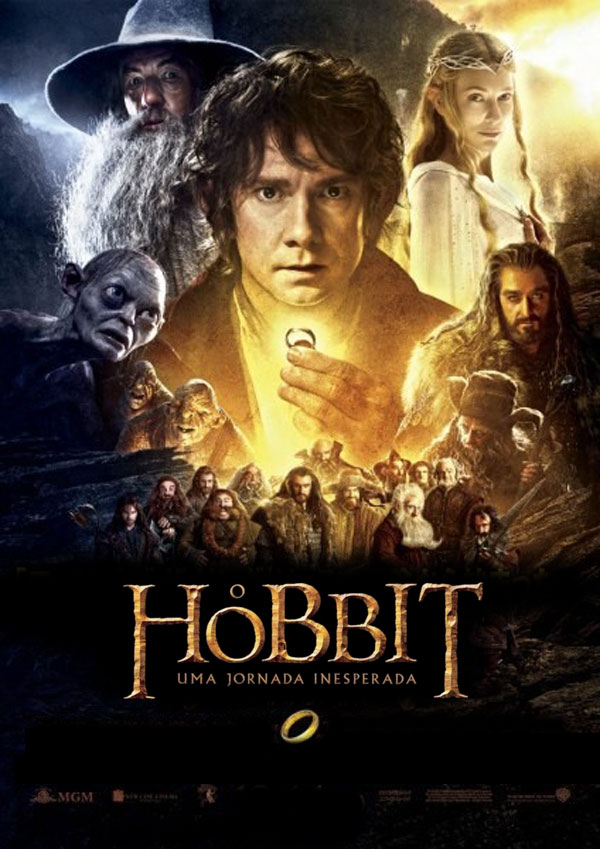
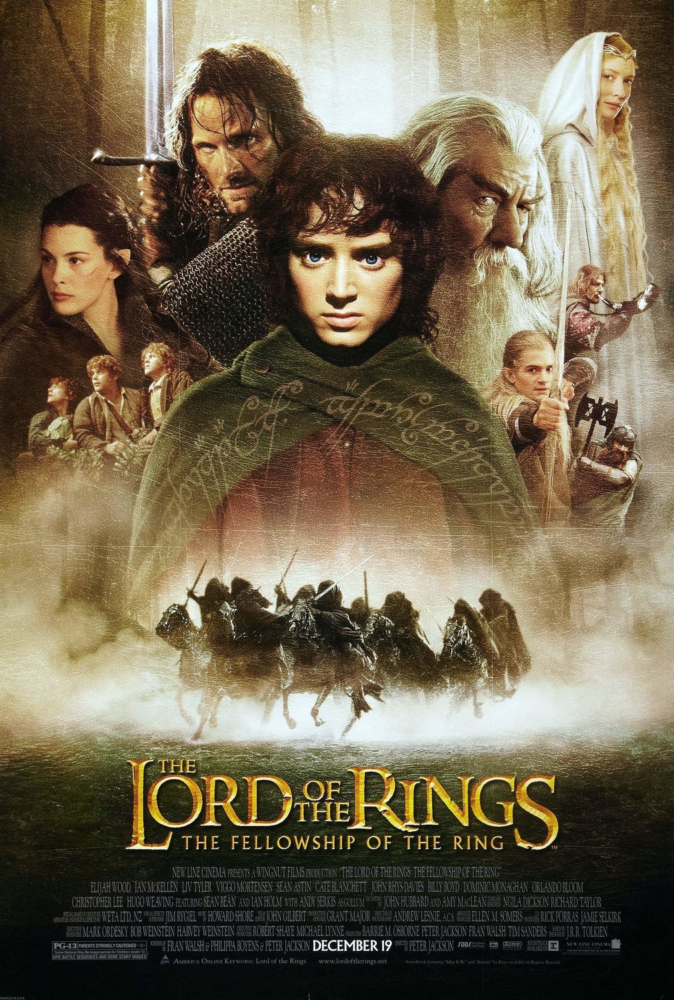

Harry Potter

Harry Potter é um garoto órfão que vive infeliz com seus tios, os Dursleys. Ele recebe uma carta contendo um convite para ingressar em Hogwarts, uma famosa escola especializada em formar jovens bruxos. Inicialmente, Harry é impedido de ler a carta por seu tio, mas logo recebe a visita de Hagrid, o guarda-caça de Hogwarts, que chega para levá-lo até a escola. Harry adentra um mundo mágico que jamais imaginara, vivendo diversas aventuras com seus novos amigos, Rony Weasley e Hermione Granger.
Data de lançamento: 23 de novembro de 2001
Diretor: Chris Columbus
Companhia(s) produtora(s): Heyday Films 1492 Pictures
Idioma: inglês
Hobbits

Como a maioria dos hobbits, Bilbo Bolseiro leva uma vida tranquila até o dia em que recebe uma missão do mago Gandalf. Acompanhado por um grupo de anões, ele parte numa jornada até a Montanha Solitária para libertar o Reino de Erebor do dragão Smaug.
Data de lançamento: 14 de dezembro de 2012
Diretor: Peter Jackson
Velozes e Furiosos

Brian O'Conner é um policial que se infiltra no submundo dos rachas de rua para investigar uma série de furtos. Enquanto tenta ganhar o respeito e a confiança do líder Dom Toretto, ele corre o risco de ser desmascarado.
Data de lançamento: 28 de setembro de 2001
Diretor: Rob Cohen
O Senhor dos Anéis

The Lord of the Rings: The Fellowship of the Ring é um filme de fantasia dirigido por Peter Jackson e baseado no primeiro volume da série O Senhor dos Anéis, de J. R. R. Tolkien. O filme narra a procura do Senhor do Escuro Sauron pelo Um Anel. O anel que atualmente está em posse do hobbit Frodo Bolseiro.
Data de lançamento: 1 de janeiro de 2002 (Brasil)
Diretor: Peter Jackson